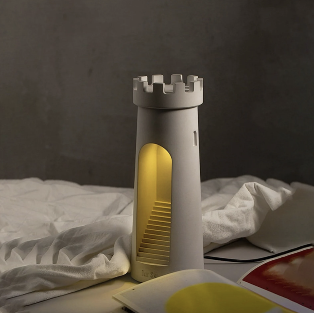

A5! Lamps part 2!
The final look of the lamp
After consideration of 3D printing time and space limitations, I decided to choose the version where the bulb
is installed at the bottom and points upwards.

The inspiration I got is an exquisite and elegant lighthouse lamp on Etsy
that is made of concrete.
Measurements
The diameter of the lamp innered is 37.22mm measured by the caliper. I went to Westlake Ace Hardware to buy the
smallest light bulb that I can. (height: 55.50mm, width: 35.00mm) The size of the light bulb will effect the height and width of the body of the
lighthouse.
Lamp body
I first created the light bulb holder based on the lamp innered and light bulb measurement. It helps me to decide
the inside space of the lamp body, top, and base.
Then I created a truncated cone as the lamp body with a large arched door. I moved the holder back almost to touch
the back inside the lamp body to ensure the front had enough space to shed light.
To make the light bulb easily attachable and removable, I added a vertical opening on the holder. It provided
excellent flexibility when assembling the light bulb and its cord.
I made a hole for the cord to go through the back of the lamp body, which is also an arched door, for aesthetic
consistency.
Lamp base
The base of the lamp is printed together with the holder. To make the bottom and the body can be joined together
successfully without any fasteners. I made a ring joint so the body can mount onto the base.
Lamp top
The base of the lamp is printed together with the holder. To make the bottom and the body can be joined together
successfully without any fasteners. I made a ring joint so the body can mount onto the base.
I made a castle-like top to give the lighthouse style. Adding a ring slot at the bottom of the castle makes the
body and the top can be mounted together.
This week I finished it independently!
Resources:
Kumaty
Santa Hat
Lighthouse Shape Desk Lamp
Return to home